Тема №1. Полевые кабельные линии связи
Занятие №2. Основные параметры линий связи.
1. Первичные параметры линии и их влияние на качество и дальность связи.
Для организации проводной связи в Сухопутных войсках применяются полевые кабельные линии связи, постоянные кабельные линии связи и постоянные воздушные линии связи.
Полевые кабельные линии связи в отличие от постоянных кабельных и воздушных линий менее громоздки, могут быстро прокладываться и сниматься; кабели полевых линий пригодны для многократного использования.
1.1. Основные сведения о первичных параметрах линии связи.
В отличие от цепей с сосредоточенными параметрами (реостаты, конденсаторы, катушки индуктивности) линия связи представляет собой цепь, в которой электрические параметры равномерно рассредоточены по всей длине.
Электрические характеристики R, L, С и G 1 км цепи называют первичными параметрами.
Итак, линию связи характеризуют четыре первичных параметра:
- сопротивление R, ом/км;
- индуктивность L, гн/км;
- емкость С, ф/км;
- проводимость изоляции G, 1/ом*км.
Эквивалентная схема 1 км двухпроводной цепи показана на рис. 1.
Рассмотрим более подробно каждый из первичных параметров.Сопротивление цепи
Различают сопротивление цепи постоянному току (омическое сопротивление) и сопротивление цепи переменному току (активное сопротивление).
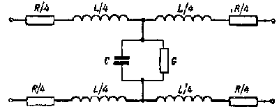Сопротивление 1 км провода постоянному току зависит от материала провода (удельного сопротивления), диаметра провода и температуры.
Так, например, сопротивление медных проводов меньше, чем стальных.
Сопротивление проводов с большим диаметром меньше сопротивления проводов с меньшим диаметром.
Сопротивление любого провода при увеличении температуры увеличивается.
Омическое сопротивление 1 км провода при температуре 20° С может быть подсчитано по формуле:
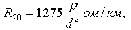где p—удельное сопротивление материала провода (для меди p=0,018; для стали p=0,14).
Омическое сопротивление 1 км провода для любой температуры, отличной от 20° С, может быть подсчитано по формуле.
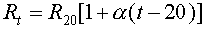где Rt — сопротивление при данной температуре;
a — температурный коэффициент сопротивления,
Для двухпроводных цепей полученную величину сопротивления необходимо умножить на два.
Сопротивление 1 км провода переменному току зависит, кроме указанных факторов, еще и от частоты тока. Сопротивление переменному току всегда больше, чем постоянному, вследствие поверхностного эффекта, который как бы уменьшает полезную площадь поперечного сечения провода.
Сущность поверхностного эффекта состоит в следующем. При прохождении переменного тока по проводу величина созданного током магнитного потока все время изменяется, что приводит к появлению в проводе ЭДС самоиндукции. Так как центральная часть провода охватывается большим магнитным потоком, чем внешняя, то ЭДС самоиндукции в центре провода больше, чем в его внешних слоях. Известно, что ЭДС самоиндукции создает ток, противодействующий изменениям основного тока. Так как в центре провода ЭДС самоиндукции больше, то и противодействие основному току в центре провода больше.
Таким образом, основной ток распределяется по сечению провода неодинаково: плотность тока в центральной части по сравнению с плотностью тока во внешних слоях уменьшается. Следовательно, центральная часть сечения провода при переменном токе полезно не используется, поэтому сопротивление провода увеличивается (по сравнению с его сопротивлением постоянному току).
Так как с увеличением частоты тока ЭДС самоиндукции увеличивается, то поверхностный эффект, а следовательно, и сопротивление провода переменному току с увеличением частоты увеличиваются.
Зависимость сопротивления провода переменному току от частоты определяется формулой:
где К1 — коэффициент, учитывающий частоту тока (с увеличением частоты тока К1 увеличивается).
Индуктивность цепи
Индуктивность — это способность проводника создавать магнитный поток при прохождении по нему тока.
Магнитный поток цепи складывается из внешнего и внутреннего магнитных потоков:
Соответственно этому и общая индуктивность цепи складывается из внешней и внутренней индуктивностей:
Индуктивность 1 км двухпроводной цепи зависит от материала проводов (магнитной проницаемости), расстояния между проводами (для однопроводной цепи—от высоты подвеса провода), диаметра проводов и частоты тока.
Внешняя индуктивность цепи зависит от расстояния между проводами и их диаметра. При прохождении тока вокруг каждого из проводов создается магнитный поток. Так как токи в проводах цепи протекают в противоположных направлениях, то и направления магнитных потоков также противоположны. При уменьшении расстояния между проводами результирующий магнитный поток, а следовательно, и индуктивность цепи уменьшаются.
При объяснении зависимости индуктивности от диаметра проводов необходимо иметь в виду, что магнитный поток создается только вокруг проводника с током. Если одинаковый ток проходит по проводам разного диаметра, то вокруг провода с меньшим диаметром магнитный поток имеет возможность замыкаться по более короткому пути, обладающему меньшим магнитным сопротивлением. Поэтому с уменьшением диаметра проводов магнитный поток, а следовательно, и индуктивность цепи возрастают.
Внутренняя индуктивность цепи определяется внутренним магнитным потоком. В проводах с большей магнитной проницаемостью (например, стальных) магнитный поток при той же величине тока будет больше, чем в проводах с малой магнитной проницаемостью (например, медных).
С увеличением частоты происходит вытеснение тока, а вместе с ним и магнитного потока из центра провода к его поверхности. Поэтому с увеличением частоты тока внутренний магнитный поток, а следовательно, и внутренняя индуктивность уменьшаются. Особенно это явление сказывается в стальных цепях.
Электрическая емкость цепи
Проводя двухпроводной цепи (а для однопроводной — провод и землю) можно рассматривать как обкладки конденсатора, обладающего определенной емкостью.
Как известно, емкость конденсатора зависит от площади обкладок, расстояния между ними и от материала диэлектрика.
В соответствии с этим емкость 1 км двухпроводной цепи зависит от диэлектрической проницаемости изоляционного материала, диаметра проводов и расстояния между ними.
С увеличением диэлектрической проницаемости изоляционного материала емкость увеличивается (диэлектрическая проницаемость воздуха — 1, резины — 3-4, поливинилхлорида — 4-5).
С увеличением диаметра проводов емкость увеличивается.
С увеличением расстояния между проводами емкость уменьшается.
Емкость линии связи не зависит от материала проводов и частоты тока.
Проводимость изоляции цепи
Проводимость изоляции — это свойство изоляции пропускать электрический ток.
Проводимость изоляции 1 км цепи зависит от материала и состояния изоляции, атмосферных условий и частоты тока. Так, например, проводимость резиновой изоляции полевых кабельных линий связи больше, чем проводимость изоляции постоянных воздушных линий связи, изоляционным материалом которых служит фарфор.
Проводимость изоляции значительно увеличивается при загрязнении поверхности изоляторов, при наличии в них трещин, при нарушении целости слоя изоляционного покрова кабеля. В сырую погоду проводимость изоляции значительно больше, чем в сухую погоду. С увеличением частоты тока проводимость изоляции увеличивается.
При оценке качества изоляции цепи обычно пользуются понятием “сопротивление изоляции”. Сопротивление изоляции есть величина, обратная проводимости изоляции:
Если известна (измерена) величина сопротивления изоляции всей линии, то сопротивление изоляции 1 км может быть подсчитано по формуле:
2. Вторичные параметры линий связи и их влияние на качество и дальность связи.
Каждый из рассмотренных первичных параметров оказывает определенное влияние на передачу телеграфных и телефонных сигналов. Наличие активного сопротивления и индуктивности приводит к падению напряжения. Вследствие емкости и проводимости изоляции возникает ток утечки. Однако, зная только первичные .параметры, нельзя получить полного представления о качестве цепи, так как оно определяется не только отдельными первичными параметрами, но и соотношением между ними. Поэтому для оценки качества цепей на практике обычно пользуются так называемыми вторичными параметрами, к которым относятся волновое сопротивление и километрическое затухание.
Перед изучением этих параметров рассмотрим понятие об электромагнитной волне.
Электромагнитная волна
В электрической цепи параметры распределяются по всей ее длине: любой отрезок цепи, как бы мал он ни был, всегда будет обладать сопротивлением, индуктивностью, емкостью и проводимостью изоляции.
Если цепь на всем протяжении имеет первичные параметры одинаковой величины, она называется однородной.
Если цепь состоит из нескольких участков, отличающихся первичными параметрами, она называется неоднородной,
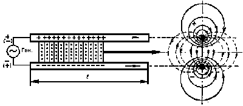Рассмотрим физическую сущность передачи электромагнитной энергии вдоль проводов однородной бесконечно длинной цепи без потерь.
Если к началу такой цепи подключить источник тока (рис. 2), то между проводами цепи возникнет напряжение: один провод, к которому подключен положительный полюс генератора, окажется заряженным положительно, а другой, к которому подключен отрицательный полюс генератора,— заряженным отрицательно. Вследствие этого между проводами возникнет электрическое поле. Заряды будут распространяться вдоль проводов. Упорядоченное движение электрических зарядов создает в проводах электрический ток. Вокруг каждого провода, по которому проходит электрический ток, создается магнитное поле.
Совокупность электрического и магнитного полей называют электромагнитным полем.
Электромагнитное поле является носителем электромагнитной энергии, которая распространяется вдоль проводов цепи от источника тока к приемнику по среде, окружающей провода цепи. В кабельных линиях связи такой средой является материал, которым изолированы жилы кабеля, а в постоянных воздушных линиях связи—воздух.
Электромагнитное поле, перемещающееся с определенной скоростью вдоль цепи, называется электромагнитной волной.
Скорость распространения электромагнитной волны вдоль проводов около 300000 км/сек.
При определенных условиях электромагнитная волна, как и другие виды волн (звуковые, световые), обладает способностью отражаться.
Волновое сопротивление цепи
Электрический ток, проходя по проводам цепи, создает падение напряжения на активном сопротивлении R и индуктивном сопротивлении ХL=wL. Следовательно, чем дальше от генератора, тем меньше напряжение между проводами цепи. Если измерить напряжение между проводами в начале (U1), в середине (U2) и в конце (U3) цепи, то окажется, что U3 всегда меньше, чем U2, a U2 меньше, чем U1.
Сила тока в различных точках цепи также неодинакова вследствие того, что часть тока через проводимость изоляции и емкость возвращается к генератору, не дойдя до нагрузки. Поэтому сила тока в конце цепи практически всегда меньше, чем в ее начале.
Следовательно, по мере удаления от начала цепи напряжение и сила тока уменьшаются. Если цепь однородна, т. е. первичные параметры R, L, С и G на всем протяжении ее одинаковы, то напряжение и ток уменьшаются в равной степени. Вследствие этого отношение напряжения к току для данной цепи {U/T} в любой ее точке будет величиной постоянной, не зависящей от длины цепи. Указанное отношение называется волновым (характеристическим) сопротивлением цепи и обозначается
Величина Z характеризует цепь, так как показывает соотношение между напряжением и током, а следовательно, между энергией электрического и магнитного полей.
Волновое сопротивление для данной однородной цепи— величина постоянная, одинаковая во всех ее точках и не зависящая от длины цепи.
Величина волнового сопротивления цепи зависит от первичных параметров R, L, С, G данной цепи. Так как все первичные параметры, за исключением емкости, зависят от частоты тока, то и волновое сопротивление изменяется с изменением частоты: при увеличении частоты тока волновое сопротивление, уменьшается.
Входное сопротивление
Выше указывалось, что электромагнитная волна обладает способностью отражаться. Если цепь разомкнута или замкнута на конце накоротко, электромагнитная волна, достигнув конца цепи, отражается полностью и распространяется к ее началу.
При сопротивлении нагрузки, равном волновому сопротивлению цепи (согласованное включение), электромагнитная волна отражаться не будет и вся энергия поступит в нагрузку.
При сопротивлении нагрузки, отличающемся от волнового сопротивления цепи (несогласованное включение), энергия будет отражаться частично: чем меньше будет отличаться сопротивление нагрузки от волнового сопротивления цепи, тем меньше будет отражаться энергии и больше поглощаться нагрузкой.
Таким образом, при согласованном включении в цепи будут иметь место только электромагнитные волны, распространяющиеся от начала к концу цепи. Эти волны называются падающими. При несогласованном включении, кроме падающих волн, появляются отраженные волны, распространяющиеся от конца к началу цепи.
При несогласованном включении отношения напряжения к току в любой точке цепи, в том числе и в начале ее, не равны между собой, так как напряжение и ток будут складываться из напряжений и токов падающих и отраженных волн:
Отношение  в любой точке цепи будет отличаться по величине от волнового сопротивления.
Для характеристики цепей, в которых отражается электромагнитная энергия, введено понятие “входное сопротивление”.
Входным сопротивлением цепи называется сопротивление, измеренное на входе ее при любом нагрузочном сопротивлении на конце. Оно определяется как отношение напряжения к току в начале цепи и обозначается
Если цепь электрически длинная (затухание более 1,5 неп), то отраженные волны из-за потери энергии не будут доходить до начала цепи и входное сопротивление цепи будет равно волновому.
Если нагрузочное сопротивление равно волновому сопротивлению цепи, то отраженные волны возникать не будут, и входное сопротивление также будет равно волновому.
Во всех других случаях входное сопротивление будет отличаться по величине от волнового. Это отличие будет тем больше, чем больше будет отличаться сопротивление нагрузки от волнового сопротивления цепи.
Затухание цепи
Как указывалось выше, амплитуды тока и напряжения в конце цепи меньше амплитуд тока и напряжения в начале цепи. Следовательно, при распространении электрической энергии по проводам амплитуды тока и напряжения уменьшаются, или, как говорят, претерпевают затухание.
Единицей затухания является непер.
Один непер (1 неп)—это затухание такой цепи, в конце которой амплитуда тока или напряжения в 2,72 раза меньше амплитуды тока или напряжения в начале цепи. Так как в конце цепи, имеющей затухание 1 неп, ток и напряжение уменьшаются в 2,72 раза, то мощность, равная произведению напряжения на ток (P=U*I), уменьшается в 7,4 раза (2,72*2,72).
Если затухание составляет 2 неп, то ток и напряжение ослабляются в 2,722, а мощность—в 7,42 раза; если затухание составляет 3 неп, то ток и напряжение ослабляются в 2,723, а мощность — в 7,43 раза и т. д.
Затухание однородной цепи длиной 1 км называется километрическим затуханием. Километрическое затухание обозначается буквой b и измеряется в неперах на 1 км. Оно характеризует уменьшение тока, напряжения и мощности на однородном участке цепи длиной 1 км.
Километрическое затухание зависит от первичных параметров цепи.
Для постоянных воздушных линий связи эта зависимость определяется формулой:
где R, L, С, G—первичные параметры цепи.
Для кабельных цепей, в которых преобладающее значение имеет емкость, а индуктивность и проводимость изоляции очень малы по величине, зависимость километрического затухания от первичных параметров может быть выражена формулой:
Так как первичные параметры цепи зависят от частоты, то и километрическое затухание зависит от частоты: с увеличением частоты тока километрическое затухание цепей увеличивается. Увеличение затухания объясняется тем, что с возрастанием частоты тока увеличиваются активное сопротивление и проводимость изоляции.
Рис. 3. Определение дальности телефонной связи
Зная километрическое затухание цепи (b) и длину цепи (l), можно определить собственное затухание всей цепи (b):
Зная километричеокое затухание цепи и затухание, которое способна перекрыть та или иная аппаратура (bпер), можно определить дальность телефонной связи (рис. 3):
